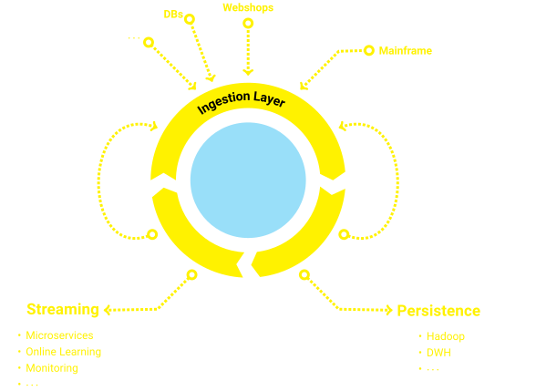
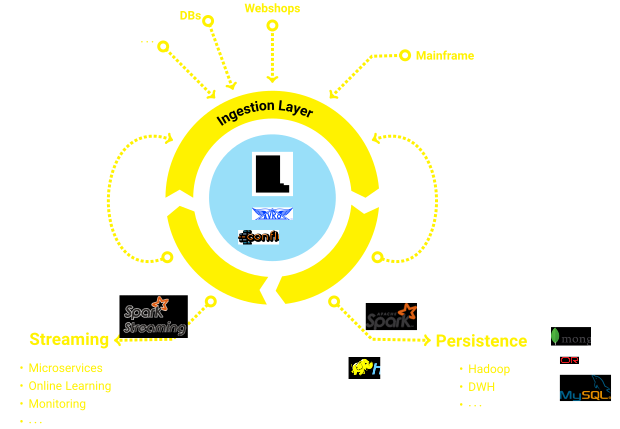

<!doctype html>
<html xmlns="http://www.w3.org/1999/html">
	<head>
		<meta charset="utf-8">
		<meta name="viewport" content="width=device-width, initial-scale=1.0, maximum-scale=1.0, user-scalable=no">

		<title>Event-driven Datalake</title>

		<link rel="stylesheet" href="css/reveal.css">
		<link rel="stylesheet" href="css/theme/blood.css">

		<!-- Theme used for syntax highlighting of code -->
		<link rel="stylesheet" href="lib/css/zenburn.css">

		<!-- Printing and PDF exports -->
		<script>
			var link = document.createElement( 'link' );
			link.rel = 'stylesheet';
			link.type = 'text/css';
			link.href = window.location.search.match( /print-pdf/gi ) ? 'css/print/pdf.css' : 'css/print/paper.css';
			document.getElementsByTagName( 'head' )[0].appendChild( link );
		</script>
	</head>
	<body>
		<div class="reveal">
			<div class="slides">

                <section data-markdown data-separator="^\n---\n$" data-separator-vertical="^\n--\n$">
                    <script type="text/template">
                        ### Datalake
                        ** <font color="yellow">MISSION: seamless transition to state of the art event streams </font> **

                        ---

                        <table align="center" class="reveal">
                            <tr>
                                <td>
                                    
                                    <br> Berlin + Karlsruhe
                                    <br> Software development
                                </td>
                                <td>
                                    
                                    <br> Karlsruhe
                                    <br> Data Science
                                </td>

                            </tr>
                        </table>

                        <br> </br>

                        **Team: Datalaken**

                        ---
                        
                        ### What is a Data Scientist without Data?
                        
                        Unemployed.<!-- .element: class="fragment" -->
                        
                        ---
                        
                        
                        ### When we started a Big Data Lab:
                        * Small Hadoop Cluster
                        * Weekly Mainframe Exports
                        * No Online Data
                        * First "Live" Data From Call Center 
                        
                        $\Rightarrow$ Tedious data imports, only offline batch use cases <!-- .element: class="fragment" -->
                        $\Rightarrow$  Most useful and reliable source was live data <!-- .element: class="fragment" -->
                        
                        ---
                        
                        ### Rebuilding the Data Infrastructure
                        * Integration of legacy data from various sources <!-- .element: class="fragment" -->
                        * Making those source available as streams <!-- .element: class="fragment" -->
                        * Feeding data back to legacy systems and databases <!-- .element: class="fragment" -->

                        ---

                        ### Our Solution
                        #### Every system publishes <font color="yellow">events</font>

                        ---

                        

                        --

                        
                        

                        
                        ---
                                                
                        ###  Make publishing events easy

                        * **<font color="yellow">Avrodite:</font>** Register schemas from example events
                        * **<font color="yellow">Watergate:</font>** Java/REST clients with zero configuration
                        ``` 
                        Client client = new Client(DatalakeStage.PROD);
                        client.send(event);
                        ```
                        ``` 
                        POST /watergate/datalakeevents/prod
                        {
                           "source" : "qudosoft_customerCare",    
                           "type" : "orderSent",
                           "payload" : "..."
                        }
                        ```
                        
                        ---
                        
                        ### Making everybody happy
                        
                        * Streams for online learning models and business services
                          * Core services can use realtime business information
                          * Devs can add new features faster
                          * Data Scientists get all data delivered to their workbench
                        * Persistence for BI, reporting and batch analysis
                          * Reporting as usual
                          * No per-source ETL, full automation of data import
                        
                        ---
                        
                        
                    </script>
                </section>


			</div>
		</div>

		<script src="lib/js/head.min.js"></script>
		<script src="js/reveal.js"></script>

		<script>
			// More info https://github.com/hakimel/reveal.js#configuration
			Reveal.initialize({
				history: true,

				math: {
		            mathjax: 'https://cdn.mathjax.org/mathjax/latest/MathJax.js',
		            config: 'TeX-AMS_HTML-full'  // See http://docs.mathjax.org/en/latest/config-files.html
	            },

				// More info https://github.com/hakimel/reveal.js#dependencies
				dependencies: [
					{ src: 'plugin/markdown/marked.js' },
					{ src: 'plugin/markdown/markdown.js' },
					{ src: 'plugin/notes/notes.js', async: true },
					{ src: 'plugin/highlight/highlight.js', async: true, callback: function() { hljs.initHighlightingOnLoad(); } },
					{ src: 'plugin/math/math.js', async: true },
					// Zoom in and out with Alt+click
             		{ src: 'plugin/zoom-js/zoom.js', async: true }
				]
			});
		</script>
	</body>
</html>
